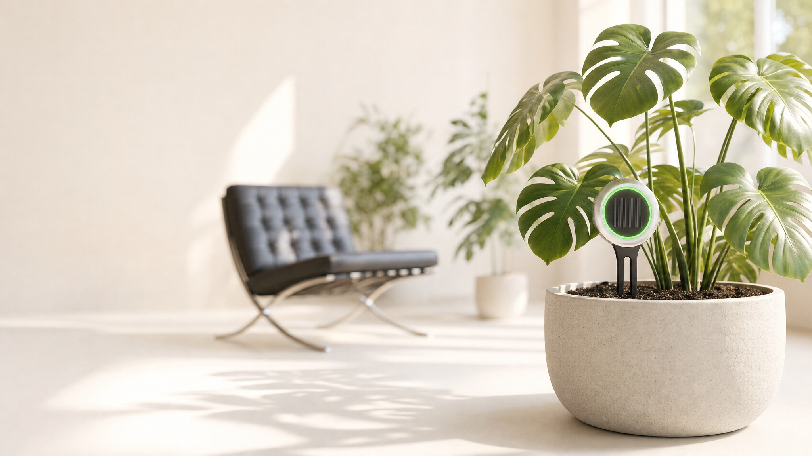
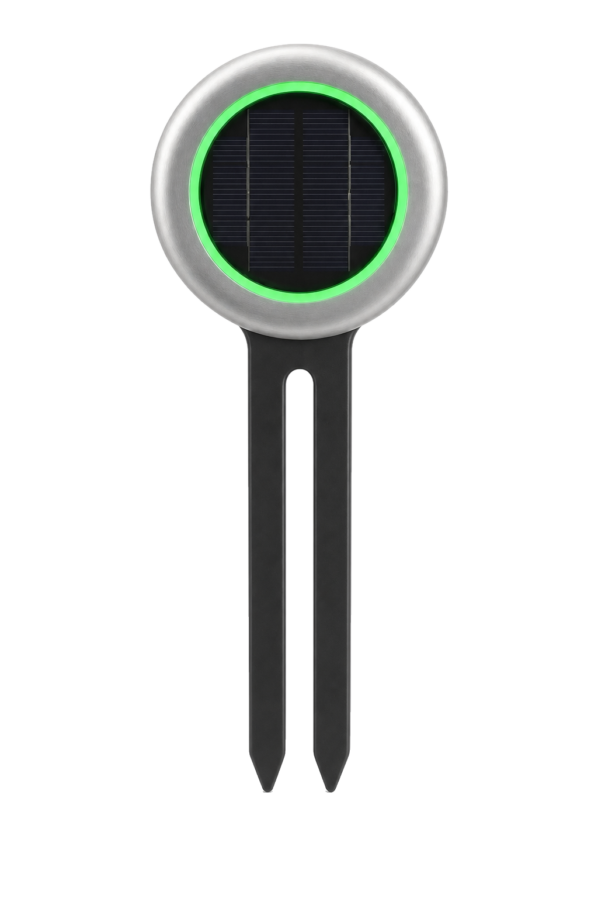
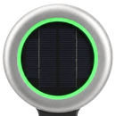
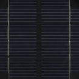
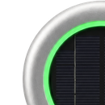
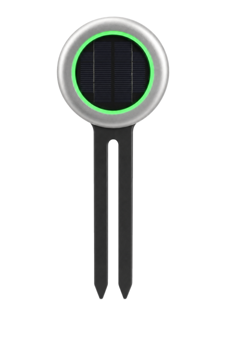

Your plants, always in sync.
AI 智能植物养护系统
插入土壤，自动唤醒。湿度、肥力、光照、温度数据实时回传。顶部光语呼吸灯替植物开口说话，看一眼就知道。光伏供电，永久续航。

一整代人把绿植当孩子来养，却总在无意间养不好它们。
的千禧一代与 Z 世代自称「植物父母」 — 养绿植已成这一代的生活方式。
却坦言自己是「植物杀手」。爱是真心的，只是不知道怎么读懂它。
是每人平均养丢的盆数。不知何时该浇、浇多少；盆越多，越顾不过来。
Source · Statista 全美园艺消费者调研
养不好，从来不是小众烦恼 —— 这是一个 7205 万家庭、$18 亿规模的市场。
美国园艺家庭 · 潜在用户基数（全美 1.31 亿户 × 55% 园艺渗透）
室内植物探针的市场天花板（TAM 理论营收）
锁定千禧一代室内植物父母 · 可服务人群（SAM）
Source · US Census Bureau、Statista，MoriSync 测算

Glass micro-bead 喷砂，触手温润如石
顶部圆盘把光变成电
永不充电
绿色正常 · 黄色提醒 · 红色告急
看一眼就懂，无需开机
双叉电容传感
土壤湿度与肥力如实回传
从铝合金外壳到电容传感,每个细节都按工业精度打磨。
最好的提醒，是不用掏手机就知道。顶部呼吸灯用颜色与节奏说话，走过它身边那一眼，状态了然于心。
土壤水分充足，植物健康。绿意缓缓呼吸，无需打扰。
水分或养分开始走低，宜留意。黄环从容起伏，提醒而不催促。
土壤极干，需立刻浇水。节奏骤然加快，请尽快处理。
设备关闭 / 充电中 / 信号失联。灰环静止，等待重连。
颜色即语言，节奏即语气。这，就是光语。
探针摆脱换电池，取决于一件事：把室内那点漫反射光，尽可能多地变成电。效率天花板最高的材料，正是钙钛矿。
当前量产方案。染料敏化 / 有机光伏，室内光已可驱动低功耗 IoT。
行业前沿的候选材料。据公开研究，带隙可调、室内效率有望数倍于硅基。
探针失联也不丢数据。本地优先的架构让你的植物档案永远可读，无订阅负担，生态开放。
土壤湿度、光照强度、养分水平、环境温度，实时汇入档案。一眼便知，这株 Monstera 过得好不好。
同一根探针，先在土里读数，再让数据与思考在云端涌动；最终所有累积涌成一道光，回到它头顶——绿是安好，红是告急。

双叉入土，自动唤醒，土壤被持续读取。

湿度、光照、肥力，离线缓存或上云。

按物种与近况，多源收束为专属方案。

所有读数与思考，最终回到探针头顶那圈光。无需打开 App，一眼即知。
同一套感知系统，两种供电方案。永不充电的旗舰，与灵活可拆的入门款。
App 内首次提及后，后续直接用 Solar 与 Lite。不用「版本 A/B」「Pro/Standard」等命名。
旗舰探针。室内自然光即可自供电，永不充电。
入门款。探针长期插土，只需取下磁吸电池充电，数据零中断。
接入 Apple Home、Google Home 与 Amazon Alexa，把家里每一株植物排成一面绿墙。谁渴了、谁该添养料，抬头一望便知。